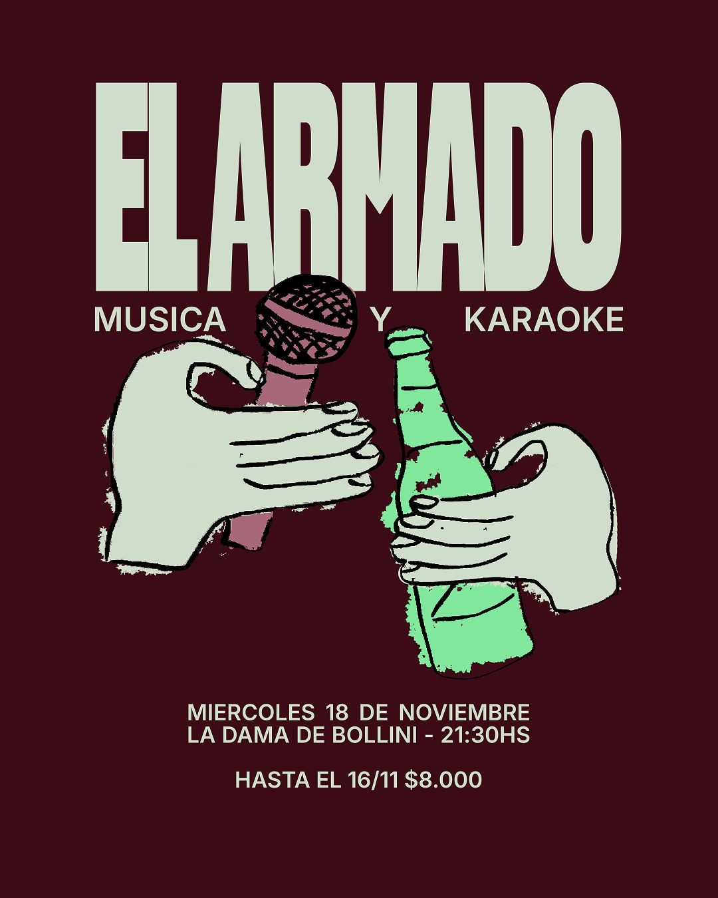

Identidad visual Club de Economía — UTDT Marca y sistema gráfico para el relanzamiento del Club de Economía de la UTDT. 2026
Identidad y campaña OLAS Di Tella Identidad y afiches para la campaña «Tu voz transforma» de OLAS Di Tella. 2026
 Identidad visual El Armado Identidad ilustrada para la segunda edición de El Armado, en La Dama de Bollini. 2026
Dirección creativa Orfeo Dirección creativa, audiovisual y web para la colección En la Esquina de ORFEO. 2026